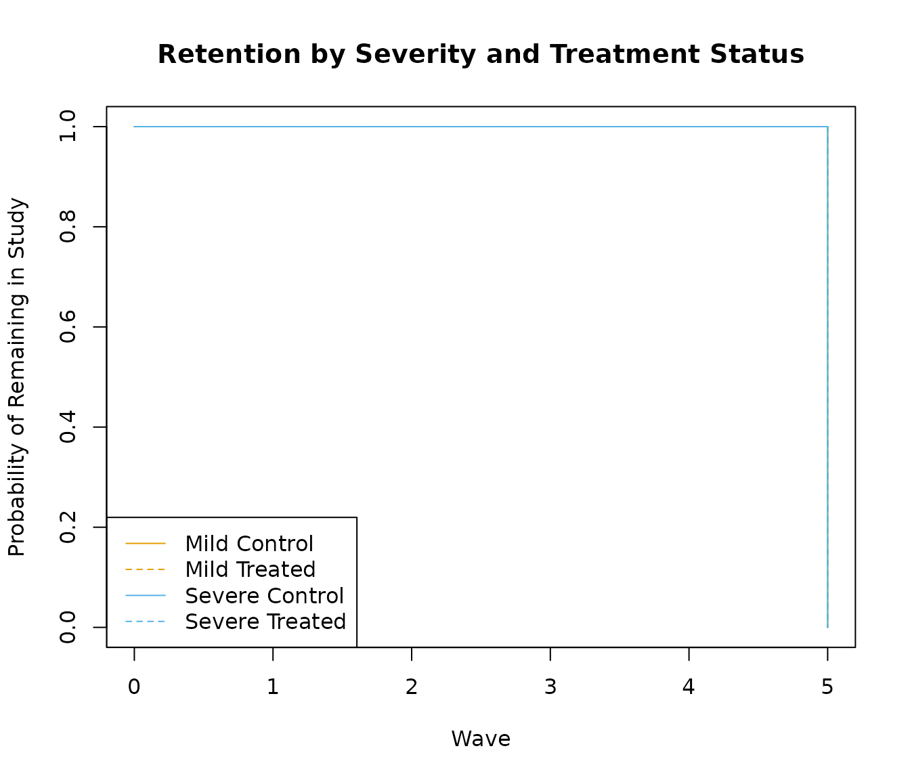
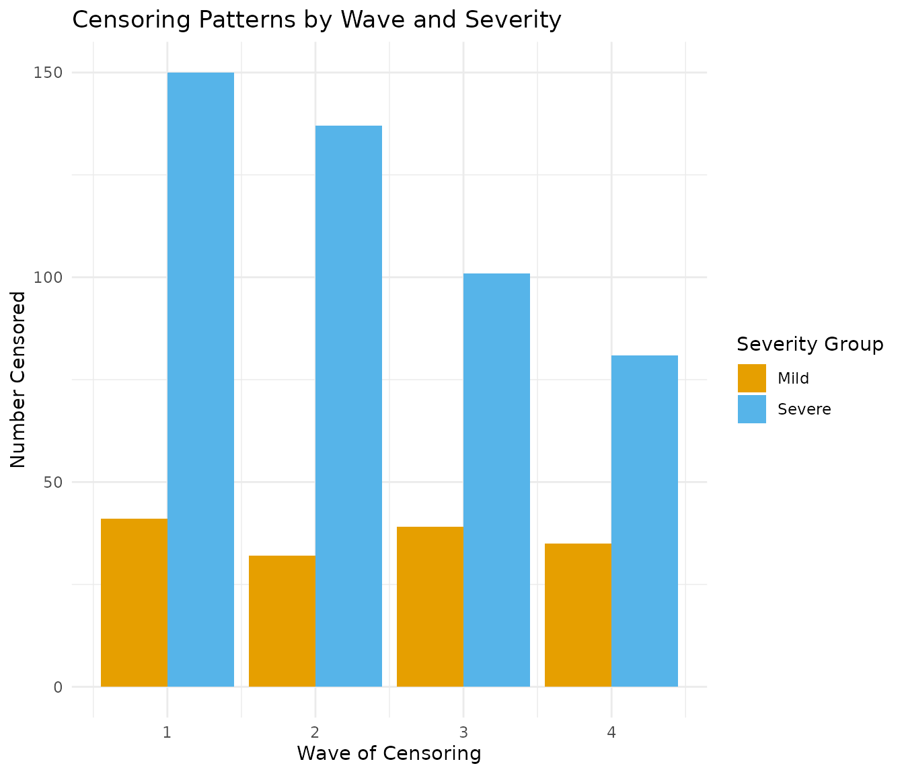
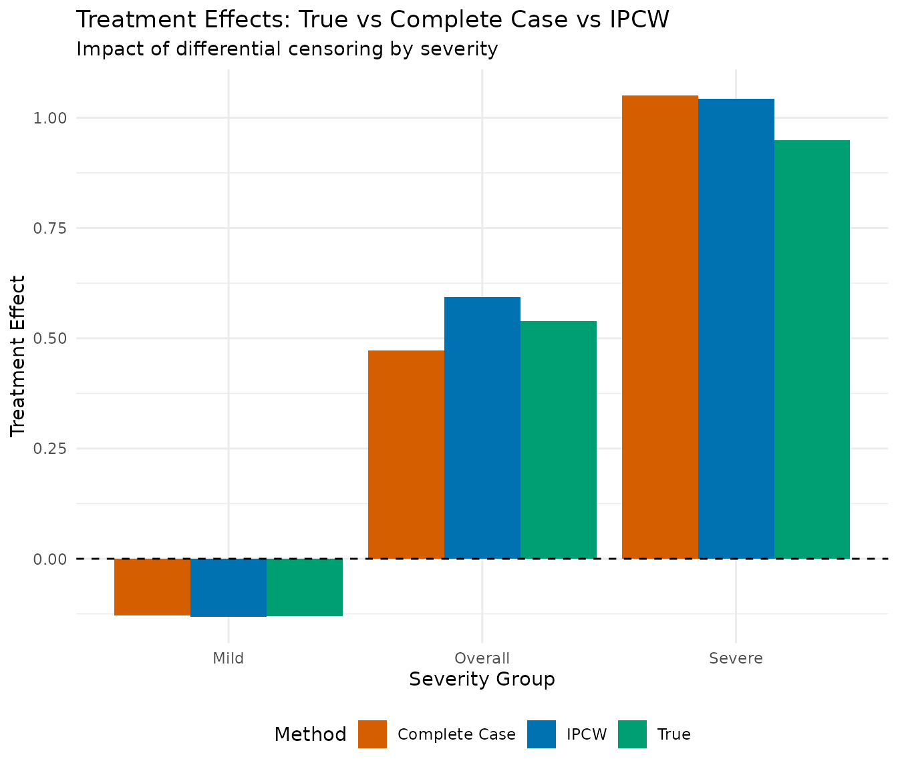
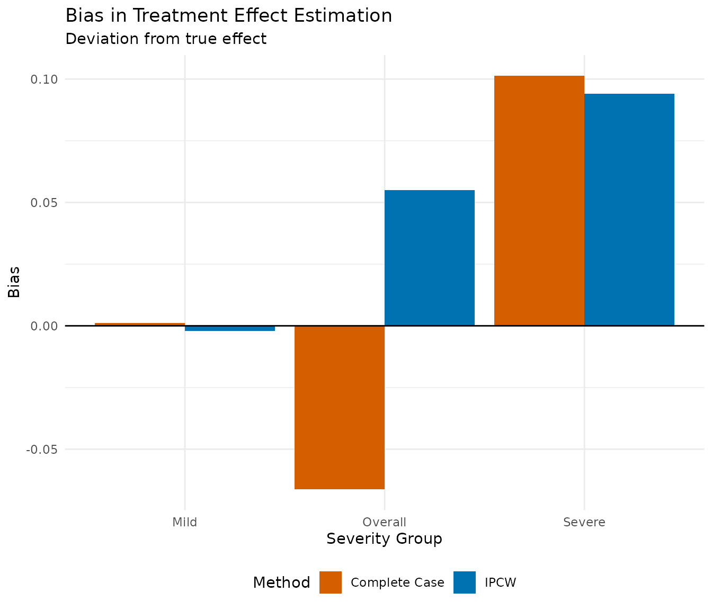
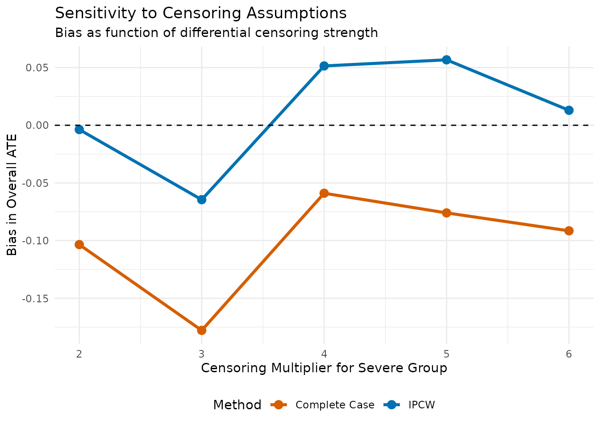
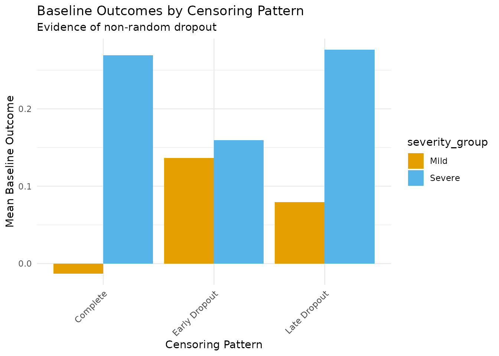

Censoring and Effect Modification
Source:vignettes/censoring-effect-mod.Rmd
censoring-effect-mod.RmdIntroduction
This vignette explores the critical interaction between censoring and effect modification in longitudinal studies. We demonstrate how:
- Differential censoring can occur when dropout depends on effect modifiers
- Selection bias emerges when analyses ignore informative censoring
- Weighted analyses can help correct for censoring-induced bias
- Sensitivity analyses assess robustness to censoring assumptions
Motivating Example: Mental Health Intervention
Consider a digital mental health intervention where:
- Participants with severe baseline symptoms (high B1) benefit most from treatment
- However, these same participants are more likely to drop out
- The treatment reduces symptoms more in the severe group (effect modification)
- Ignoring differential dropout will underestimate treatment benefits
This creates a challenging scenario where the subgroup with the largest treatment benefit is most likely to be censored.
Setting Up the Simulation
Step 1: Define Effect Modification and Censoring Parameters
# Simulation parameters
n <- 2000
waves <- 4
# Effect modification parameters
base_effect <- 0.2 # Base treatment effect
severe_modifier <- 0.5 # Additional effect for severe symptoms
severe_threshold <- 0 # B1 > 0 indicates severe symptoms
# Censoring parameters
base_censoring_prob <- 0.05 # 5% per wave for low severity
severe_censoring_multiplier <- 4 # 4x higher for severe group
treatment_protection <- 0.5 # Treatment reduces dropout by 50%
cat("Effect Modification Setup:\n")
#> Effect Modification Setup:
cat(" Base treatment effect:", base_effect, "\n")
#> Base treatment effect: 0.2
cat(" Additional effect for severe group:", severe_modifier, "\n")
#> Additional effect for severe group: 0.5
cat(" Total effect for severe group:", base_effect + severe_modifier, "\n")
#> Total effect for severe group: 0.7
cat("\nCensoring Setup:\n")
#>
#> Censoring Setup:
cat(" Base censoring probability:", base_censoring_prob, "\n")
#> Base censoring probability: 0.05
cat(" Severe group multiplier:", severe_censoring_multiplier, "\n")
#> Severe group multiplier: 4
cat(" Treatment protection factor:", treatment_protection, "\n")
#> Treatment protection factor: 0.5Step 2: Simulate Data with Strong Effect Modification
set.seed(2025)
# Simulation parameters with effect modification
sim_params <- list(
# Base treatment effect
a_lag_y_coef = base_effect,
# Strong effect modification by baseline severity (b1)
a_b1_y_het = severe_modifier,
# Make severe symptoms stable over time
b1_y_coef = 0.8,
# Other parameters
y_feedback = "full"
)
# Simulate data
sim_result <- margot_simulate(
n = n,
waves = waves,
params = sim_params,
seed = 2025
)
# Add severity indicator
sim_result$severity_group <- ifelse(sim_result$b1 > severe_threshold,
"Severe", "Mild")
# Check balance
severity_summary <- sim_result %>%
group_by(severity_group) %>%
summarise(
n = n(),
prop = n / nrow(sim_result),
mean_b1 = mean(b1),
baseline_outcome = mean(t0_y),
.groups = "drop"
)
print(severity_summary)
#> # A tibble: 2 × 5
#> severity_group n prop mean_b1 baseline_outcome
#> <chr> <int> <dbl> <dbl> <dbl>
#> 1 Mild 958 0.479 -0.794 0.00545
#> 2 Severe 1042 0.521 0.810 0.240Step 3: Apply Differential Censoring
# Create censoring shadow that depends on severity and treatment
create_differential_censoring <- function(data) {
n_obs <- nrow(data)
censored <- rep(FALSE, n_obs)
censoring_wave <- rep(NA, n_obs)
censoring_prob <- rep(NA, n_obs)
for (wave in 1:waves) {
# Skip if already censored
still_observed <- !censored
if (sum(still_observed) == 0) break
# Get current treatment status
treatment_var <- paste0("t", wave, "_a")
if (!(treatment_var %in% names(data))) next
# Calculate censoring probability
# Base probability
prob <- rep(base_censoring_prob, n_obs)
# Increase for severe group
prob[data$severity_group == "Severe"] <- prob[data$severity_group == "Severe"] *
severe_censoring_multiplier
# Reduce if treated (protective effect)
prob[data[[treatment_var]] == 1] <- prob[data[[treatment_var]] == 1] *
treatment_protection
# Apply censoring
newly_censored <- still_observed & (runif(n_obs) < prob)
censored[newly_censored] <- TRUE
censoring_wave[newly_censored] <- wave
censoring_prob[newly_censored] <- prob[newly_censored]
}
# Add censoring info to data
data$censored <- censored
data$censoring_wave <- censoring_wave
data$censoring_prob <- censoring_prob
# Apply censoring to outcome variables
data_censored <- data
for (i in 1:n_obs) {
if (data_censored$censored[i]) {
cwave <- data_censored$censoring_wave[i]
# Set all variables after censoring wave to NA
for (w in cwave:(waves + 1)) {
outcome_var <- paste0("t", w, "_y")
if (outcome_var %in% names(data_censored)) {
data_censored[[outcome_var]][i] <- NA
}
}
}
}
return(data_censored)
}
# Apply censoring
data_censored <- create_differential_censoring(sim_result)
# Censoring summary
censoring_summary <- data_censored %>%
group_by(severity_group) %>%
summarise(
n = n(),
n_censored = sum(censored),
prop_censored = mean(censored),
.groups = "drop"
)
cat("\n=== Censoring Summary ===\n")
#>
#> === Censoring Summary ===
print(censoring_summary)
#> # A tibble: 2 × 4
#> severity_group n n_censored prop_censored
#> <chr> <int> <int> <dbl>
#> 1 Mild 958 147 0.153
#> 2 Severe 1042 469 0.450
# By treatment and severity
censoring_by_treatment <- data_censored %>%
group_by(severity_group, t1_a) %>%
summarise(
n = n(),
prop_censored = mean(censored),
.groups = "drop"
) %>%
mutate(Treatment = ifelse(t1_a == 1, "Treated", "Control"))
print(censoring_by_treatment)
#> # A tibble: 4 × 5
#> severity_group t1_a n prop_censored Treatment
#> <chr> <int> <int> <dbl> <chr>
#> 1 Mild 0 469 0.164 Control
#> 2 Mild 1 489 0.143 Treated
#> 3 Severe 0 436 0.495 Control
#> 4 Severe 1 606 0.417 TreatedStep 4: Visualize Censoring Patterns
# Survival curves by group
surv_data <- data_censored %>%
mutate(
time = ifelse(censored, censoring_wave, waves + 1),
status = as.numeric(!censored), # 1 = observed (not censored)
group = paste(severity_group, ifelse(t1_a == 1, "Treated", "Control"))
)
# Kaplan-Meier curves
km_fit <- survfit(Surv(time, status) ~ group, data = surv_data)
# Plot survival curves
plot(km_fit, col = c("#E69F00", "#E69F00", "#56B4E9", "#56B4E9"),
lty = c(1, 2, 1, 2),
xlab = "Wave", ylab = "Probability of Remaining in Study",
main = "Retention by Severity and Treatment Status")
legend("bottomleft",
c("Mild Control", "Mild Treated", "Severe Control", "Severe Treated"),
col = c("#E69F00", "#E69F00", "#56B4E9", "#56B4E9"),
lty = c(1, 2, 1, 2))
# Censoring patterns over waves
censoring_waves <- data_censored %>%
filter(censored) %>%
group_by(censoring_wave, severity_group) %>%
summarise(n = n(), .groups = "drop") %>%
complete(censoring_wave = 1:waves, severity_group, fill = list(n = 0))
p1 <- ggplot(censoring_waves, aes(x = censoring_wave, y = n, fill = severity_group)) +
geom_bar(stat = "identity", position = "dodge") +
scale_fill_manual(values = c("Mild" = "#E69F00", "Severe" = "#56B4E9")) +
labs(
title = "Censoring Patterns by Wave and Severity",
x = "Wave of Censoring",
y = "Number Censored",
fill = "Severity Group"
) +
theme_minimal()
print(p1)
Analyzing Treatment Effects
Complete Case Analysis (Biased)
# Complete case analysis
complete_cases <- data_censored %>%
filter(!is.na(t5_y)) # Final outcome available
cc_summary <- complete_cases %>%
group_by(severity_group) %>%
summarise(
n_total = n(),
prop_of_original = n() / (nrow(data_censored) / 2),
mean_b1 = mean(b1),
.groups = "drop"
)
cat("\n=== Complete Case Sample ===\n")
#>
#> === Complete Case Sample ===
print(cc_summary)
#> # A tibble: 2 × 4
#> severity_group n_total prop_of_original mean_b1
#> <chr> <int> <dbl> <dbl>
#> 1 Mild 811 0.811 -0.781
#> 2 Severe 573 0.573 0.823
# Calculate treatment effects
calculate_ate <- function(data, outcome_var = "t5_y", treatment_var = "t4_a") {
data %>%
group_by(severity_group) %>%
summarise(
n = n(),
effect = mean(.data[[outcome_var]][.data[[treatment_var]] == 1], na.rm = TRUE) -
mean(.data[[outcome_var]][.data[[treatment_var]] == 0], na.rm = TRUE),
.groups = "drop"
)
}
# Complete case effects
cc_effects <- calculate_ate(complete_cases)
cc_overall <- with(complete_cases,
mean(t5_y[t4_a == 1], na.rm = TRUE) -
mean(t5_y[t4_a == 0], na.rm = TRUE))
cat("\n=== Complete Case Treatment Effects ===\n")
#>
#> === Complete Case Treatment Effects ===
print(cc_effects)
#> # A tibble: 2 × 3
#> severity_group n effect
#> <chr> <int> <dbl>
#> 1 Mild 811 -0.129
#> 2 Severe 573 1.05
cat("Overall ATE (complete cases):", round(cc_overall, 3), "\n")
#> Overall ATE (complete cases): 0.473True Effects (No Censoring)
# Calculate true effects using full data
true_effects <- calculate_ate(sim_result)
true_overall <- with(sim_result,
mean(t5_y[t4_a == 1]) - mean(t5_y[t4_a == 0]))
cat("\n=== True Treatment Effects (No Censoring) ===\n")
#>
#> === True Treatment Effects (No Censoring) ===
print(true_effects)
#> # A tibble: 2 × 3
#> severity_group n effect
#> <chr> <int> <dbl>
#> 1 Mild 958 -0.130
#> 2 Severe 1042 0.949
cat("Overall ATE (true):", round(true_overall, 3), "\n")
#> Overall ATE (true): 0.539
# Compare bias
bias_summary <- data.frame(
Group = c("Mild", "Severe", "Overall"),
True_Effect = c(true_effects$effect, true_overall),
CC_Effect = c(cc_effects$effect, cc_overall),
Bias = c(cc_effects$effect, cc_overall) - c(true_effects$effect, true_overall)
) %>%
mutate(Relative_Bias = 100 * Bias / True_Effect)
cat("\n=== Bias from Complete Case Analysis ===\n")
#>
#> === Bias from Complete Case Analysis ===
print(bias_summary %>% mutate(across(where(is.numeric), ~round(., 3))))
#> Group True_Effect CC_Effect Bias Relative_Bias
#> 1 Mild -0.130 -0.129 0.001 -0.930
#> 2 Severe 0.949 1.051 0.101 10.678
#> 3 Overall 0.539 0.473 -0.066 -12.305Inverse Probability of Censoring Weights (IPCW)
# Calculate inverse probability of censoring weights
calculate_ipcw <- function(data) {
# Model censoring probability
# We'll use a simple model for illustration
censor_model <- glm(censored ~ severity_group * t1_a + b1 + t0_y,
data = data,
family = binomial())
# Predict probability of being censored
data$prob_censored <- predict(censor_model, type = "response")
# Calculate weights (inverse probability of remaining)
data$ipcw <- 1 / (1 - data$prob_censored)
# Stabilize weights
data$ipcw_stabilized <- data$ipcw * mean(!data$censored)
return(data)
}
# Apply IPCW
data_weighted <- calculate_ipcw(data_censored)
# Check weight distribution
weight_summary <- data_weighted %>%
filter(!censored) %>%
group_by(severity_group) %>%
summarise(
n = n(),
mean_weight = mean(ipcw_stabilized),
sd_weight = sd(ipcw_stabilized),
min_weight = min(ipcw_stabilized),
max_weight = max(ipcw_stabilized),
.groups = "drop"
)
cat("\n=== IPCW Weight Distribution ===\n")
#>
#> === IPCW Weight Distribution ===
print(weight_summary)
#> # A tibble: 2 × 6
#> severity_group n mean_weight sd_weight min_weight max_weight
#> <chr> <int> <dbl> <dbl> <dbl> <dbl>
#> 1 Mild 811 0.817 0.0135 0.797 0.862
#> 2 Severe 573 1.26 0.0996 1.05 1.44
# Weighted analysis
weighted_effects <- data_weighted %>%
filter(!is.na(t5_y)) %>%
group_by(severity_group) %>%
summarise(
n = n(),
effect = weighted.mean(t5_y[t4_a == 1], ipcw_stabilized[t4_a == 1]) -
weighted.mean(t5_y[t4_a == 0], ipcw_stabilized[t4_a == 0]),
.groups = "drop"
)
weighted_overall <- with(data_weighted[!is.na(data_weighted$t5_y), ],
weighted.mean(t5_y[t4_a == 1], ipcw_stabilized[t4_a == 1]) -
weighted.mean(t5_y[t4_a == 0], ipcw_stabilized[t4_a == 0]))
cat("\n=== IPCW-Weighted Treatment Effects ===\n")
#>
#> === IPCW-Weighted Treatment Effects ===
print(weighted_effects)
#> # A tibble: 2 × 3
#> severity_group n effect
#> <chr> <int> <dbl>
#> 1 Mild 811 -0.132
#> 2 Severe 573 1.04
cat("Overall ATE (weighted):", round(weighted_overall, 3), "\n")
#> Overall ATE (weighted): 0.594Comparing All Approaches
# Combine all results
comparison_data <- data.frame(
Method = rep(c("True", "Complete Case", "IPCW"), each = 3),
Group = rep(c("Mild", "Severe", "Overall"), 3),
Effect = c(
true_effects$effect, true_overall,
cc_effects$effect, cc_overall,
weighted_effects$effect, weighted_overall
)
)
# Plot comparison
p2 <- ggplot(comparison_data, aes(x = Group, y = Effect, fill = Method)) +
geom_bar(stat = "identity", position = "dodge") +
geom_hline(yintercept = 0, linetype = "dashed") +
scale_fill_manual(values = c("True" = "#009E73",
"Complete Case" = "#D55E00",
"IPCW" = "#0072B2")) +
labs(
title = "Treatment Effects: True vs Complete Case vs IPCW",
subtitle = "Impact of differential censoring by severity",
x = "Severity Group",
y = "Treatment Effect"
) +
theme_minimal() +
theme(legend.position = "bottom")
print(p2)
# Bias comparison
bias_comparison <- comparison_data %>%
filter(Method != "True") %>%
left_join(comparison_data %>% filter(Method == "True") %>%
select(Group, True_Effect = Effect), by = "Group") %>%
mutate(
Bias = Effect - True_Effect,
Relative_Bias = 100 * Bias / True_Effect
)
p3 <- ggplot(bias_comparison, aes(x = Group, y = Bias, fill = Method)) +
geom_bar(stat = "identity", position = "dodge") +
geom_hline(yintercept = 0, linetype = "solid") +
scale_fill_manual(values = c("Complete Case" = "#D55E00",
"IPCW" = "#0072B2")) +
labs(
title = "Bias in Treatment Effect Estimation",
subtitle = "Deviation from true effect",
x = "Severity Group",
y = "Bias"
) +
theme_minimal() +
theme(legend.position = "bottom")
print(p3)
Sensitivity Analyses
Varying Censoring Assumptions
# Function to run sensitivity analysis
run_sensitivity <- function(censoring_multipliers = c(2, 3, 4, 5, 6)) {
results <- list()
for (mult in censoring_multipliers) {
# Redefine censoring with new multiplier
severe_censoring_multiplier <- mult
# Apply censoring
temp_data <- create_differential_censoring(sim_result)
# Complete case analysis
cc_data <- temp_data %>% filter(!is.na(t5_y))
cc_ate <- with(cc_data, mean(t5_y[t4_a == 1]) - mean(t5_y[t4_a == 0]))
# IPCW analysis
temp_weighted <- calculate_ipcw(temp_data)
weighted_data <- temp_weighted %>% filter(!is.na(t5_y))
ipcw_ate <- with(weighted_data,
weighted.mean(t5_y[t4_a == 1], ipcw_stabilized[t4_a == 1]) -
weighted.mean(t5_y[t4_a == 0], ipcw_stabilized[t4_a == 0]))
# Store results
results[[as.character(mult)]] <- data.frame(
Multiplier = mult,
Prop_Censored = mean(temp_data$censored),
CC_ATE = cc_ate,
IPCW_ATE = ipcw_ate,
CC_Bias = cc_ate - true_overall,
IPCW_Bias = ipcw_ate - true_overall
)
}
bind_rows(results)
}
# Run sensitivity analysis
sensitivity_results <- run_sensitivity()
cat("\n=== Sensitivity Analysis Results ===\n")
#>
#> === Sensitivity Analysis Results ===
print(round(sensitivity_results, 3))
#> Multiplier Prop_Censored CC_ATE IPCW_ATE CC_Bias IPCW_Bias
#> 1 2 0.296 0.436 0.535 -0.103 -0.004
#> 2 3 0.317 0.361 0.474 -0.178 -0.065
#> 3 4 0.304 0.480 0.590 -0.059 0.051
#> 4 5 0.313 0.463 0.596 -0.076 0.057
#> 5 6 0.302 0.447 0.552 -0.092 0.013
# Plot sensitivity results
sens_plot_data <- sensitivity_results %>%
select(Multiplier, `Complete Case` = CC_Bias, `IPCW` = IPCW_Bias) %>%
pivot_longer(cols = -Multiplier, names_to = "Method", values_to = "Bias")
p4 <- ggplot(sens_plot_data, aes(x = Multiplier, y = Bias, color = Method)) +
geom_line(size = 1.2) +
geom_point(size = 3) +
geom_hline(yintercept = 0, linetype = "dashed") +
scale_color_manual(values = c("Complete Case" = "#D55E00", "IPCW" = "#0072B2")) +
labs(
title = "Sensitivity to Censoring Assumptions",
subtitle = "Bias as function of differential censoring strength",
x = "Censoring Multiplier for Severe Group",
y = "Bias in Overall ATE"
) +
theme_minimal() +
theme(legend.position = "bottom")
print(p4)
Pattern Mixture Models
# Analyze outcomes by censoring pattern
pattern_analysis <- data_censored %>%
mutate(
censoring_pattern = case_when(
!censored ~ "Complete",
censoring_wave <= 2 ~ "Early Dropout",
TRUE ~ "Late Dropout"
)
) %>%
group_by(severity_group, censoring_pattern) %>%
summarise(
n = n(),
mean_baseline_y = mean(t0_y),
mean_baseline_b1 = mean(b1),
prop_treated = mean(t1_a),
.groups = "drop"
)
cat("\n=== Pattern Mixture Analysis ===\n")
#>
#> === Pattern Mixture Analysis ===
print(pattern_analysis)
#> # A tibble: 6 × 6
#> severity_group censoring_pattern n mean_baseline_y mean_baseline_b1
#> <chr> <chr> <int> <dbl> <dbl>
#> 1 Mild Complete 811 -0.0131 -0.781
#> 2 Mild Early Dropout 73 0.136 -0.836
#> 3 Mild Late Dropout 74 0.0793 -0.889
#> 4 Severe Complete 573 0.269 0.823
#> 5 Severe Early Dropout 287 0.159 0.822
#> 6 Severe Late Dropout 182 0.276 0.751
#> # ℹ 1 more variable: prop_treated <dbl>
# Visualize patterns
p5 <- ggplot(pattern_analysis, aes(x = censoring_pattern, y = mean_baseline_y,
fill = severity_group)) +
geom_bar(stat = "identity", position = "dodge") +
scale_fill_manual(values = c("Mild" = "#E69F00", "Severe" = "#56B4E9")) +
labs(
title = "Baseline Outcomes by Censoring Pattern",
subtitle = "Evidence of non-random dropout",
x = "Censoring Pattern",
y = "Mean Baseline Outcome"
) +
theme_minimal() +
theme(axis.text.x = element_text(angle = 45, hjust = 1))
print(p5)
Monte Carlo Evaluation
# Monte Carlo to evaluate methods
# Note: Due to API changes, we'll use a simplified approach
set.seed(2025)
n_mc <- 200
mc_results <- list(complete_case = numeric(n_mc), ipcw = numeric(n_mc))
for (i in 1:n_mc) {
# Simulate data
temp_sim <- margot_simulate(
n = 1000,
waves = waves,
params = sim_params,
seed = 2025 + i
)
temp_sim$severity_group <- ifelse(temp_sim$b1 > severe_threshold, "Severe", "Mild")
# Apply censoring
temp_censored <- create_differential_censoring(temp_sim)
# Complete case
cc_data <- temp_censored %>% filter(!is.na(t5_y))
mc_results$complete_case[i] <- with(cc_data, mean(t5_y[t4_a == 1]) - mean(t5_y[t4_a == 0]))
# IPCW
temp_weighted <- calculate_ipcw(temp_censored)
weighted_data <- temp_weighted %>% filter(!is.na(t5_y))
mc_results$ipcw[i] <- with(weighted_data,
weighted.mean(t5_y[t4_a == 1], ipcw_stabilized[t4_a == 1]) -
weighted.mean(t5_y[t4_a == 0], ipcw_stabilized[t4_a == 0]))
}
# Summary statistics
mc_summary <- data.frame(
Method = c("Complete Case", "IPCW"),
Mean_ATE = c(mean(mc_results$complete_case), mean(mc_results$ipcw)),
SD = c(sd(mc_results$complete_case), sd(mc_results$ipcw)),
Bias = c(mean(mc_results$complete_case) - true_overall,
mean(mc_results$ipcw) - true_overall),
RMSE = c(sqrt(mean((mc_results$complete_case - true_overall)^2)),
sqrt(mean((mc_results$ipcw - true_overall)^2)))
)
cat("\n=== Monte Carlo Results (", n_mc, " replications) ===\n", sep = "")
#>
#> === Monte Carlo Results (200 replications) ===
print(mc_summary %>% mutate(across(where(is.numeric), ~round(., 4))))
#> Method Mean_ATE SD Bias RMSE
#> 1 Complete Case 0.3989 0.0962 -0.1401 0.1698
#> 2 IPCW 0.5183 0.0947 -0.0207 0.0967Practical Recommendations
1. Always Examine Censoring Patterns
# Censoring diagnostics function
diagnose_censoring <- function(data) {
cat("=== Censoring Diagnostics ===\n\n")
# Overall rate
cat("Overall censoring rate:", round(100 * mean(data$censored), 1), "%\n\n")
# By key variables
cat("Censoring by severity:\n")
print(table(data$severity_group, data$censored))
cat("\nCensoring by treatment:\n")
print(table(data$t1_a, data$censored))
# Test for differential censoring
cat("\n=== Tests for Differential Censoring ===\n")
# By severity
sev_test <- chisq.test(table(data$severity_group, data$censored))
cat("Severity association: χ² =", round(sev_test$statistic, 2),
", p =", round(sev_test$p.value, 4), "\n")
# By treatment
trt_test <- chisq.test(table(data$t1_a, data$censored))
cat("Treatment association: χ² =", round(trt_test$statistic, 2),
", p =", round(trt_test$p.value, 4), "\n")
}
diagnose_censoring(data_censored)
#> === Censoring Diagnostics ===
#>
#> Overall censoring rate: 30.8 %
#>
#> Censoring by severity:
#>
#> FALSE TRUE
#> Mild 811 147
#> Severe 573 469
#>
#> Censoring by treatment:
#>
#> FALSE TRUE
#> 0 612 293
#> 1 772 323
#>
#> === Tests for Differential Censoring ===
#> Severity association: χ² = 204.69 , p = 0
#> Treatment association: χ² = 1.79 , p = 0.18062. Consider Multiple Imputation
# Simple illustration of MI approach
if (requireNamespace("mice", quietly = TRUE)) {
# Prepare data for imputation
mi_data <- data_censored %>%
select(id, severity_group, b1, t0_y, t1_a, t2_a, t3_a, t4_a,
t1_y, t2_y, t3_y, t4_y, t5_y)
# Impute (reduced iterations for speed)
mi_result <- mice::mice(mi_data, m = 5, maxit = 5, printFlag = FALSE)
# Analyze each imputed dataset
mi_effects <- mice::complete(mi_result, "all") %>%
lapply(function(imp_data) {
with(imp_data, mean(t5_y[t4_a == 1]) - mean(t5_y[t4_a == 0]))
})
# Pool results
pooled_ate <- mean(unlist(mi_effects))
cat("\n=== Multiple Imputation Results ===\n")
cat("Pooled ATE estimate:", round(pooled_ate, 3), "\n")
cat("Bias:", round(pooled_ate - true_overall, 3), "\n")
}
#>
#> === Multiple Imputation Results ===
#> Pooled ATE estimate: 0.469
#> Bias: -0.073. Report Censoring Transparently
# Create comprehensive censoring report
censoring_report <- list(
overall = data.frame(
Measure = c("Total Sample", "Censored", "Complete Cases", "Censoring Rate"),
Value = c(nrow(data_censored),
sum(data_censored$censored),
sum(!data_censored$censored),
paste0(round(100 * mean(data_censored$censored), 1), "%"))
),
by_group = data_censored %>%
group_by(severity_group) %>%
summarise(
N = n(),
Censored = sum(censored),
Rate = paste0(round(100 * mean(censored), 1), "%"),
.groups = "drop"
),
by_wave = data_censored %>%
filter(censored) %>%
count(censoring_wave) %>%
mutate(Percent = paste0(round(100 * n / sum(n), 1), "%"))
)
cat("\n=== Censoring Report ===\n")
#>
#> === Censoring Report ===
print(censoring_report$overall)
#> Measure Value
#> 1 Total Sample 2000
#> 2 Censored 616
#> 3 Complete Cases 1384
#> 4 Censoring Rate 30.8%
cat("\nBy Severity Group:\n")
#>
#> By Severity Group:
print(censoring_report$by_group)
#> # A tibble: 2 × 4
#> severity_group N Censored Rate
#> <chr> <int> <int> <chr>
#> 1 Mild 958 147 15.3%
#> 2 Severe 1042 469 45%
cat("\nBy Wave:\n")
#>
#> By Wave:
print(censoring_report$by_wave)
#> # A tibble: 4 × 3
#> censoring_wave n Percent
#> <int> <int> <chr>
#> 1 1 191 31%
#> 2 2 169 27.4%
#> 3 3 140 22.7%
#> 4 4 116 18.8%Summary
This vignette demonstrated:
- Differential censoring by effect modifiers creates complex selection bias
- Complete case analysis can severely underestimate treatment effects
- IPCW methods help correct bias but require correct model specification
- Sensitivity analyses are crucial for assessing robustness
- Multiple approaches (IPCW, MI, pattern mixture) should be considered
Key takeaways: - Always examine censoring patterns before analysis - Test for associations between censoring and key variables - Use weighted analyses when censoring is informative - Conduct sensitivity analyses under different assumptions - Report censoring transparently in all publications
The interaction between censoring and effect modification is particularly challenging because: - Groups with largest benefits may be most likely to drop out - This creates bias that opposes the true effect - Standard complete case analysis can miss important benefits - Proper handling of censoring is essential for valid inference
Next vignettes will explore heterogeneous treatment effects and complex time-varying scenarios.